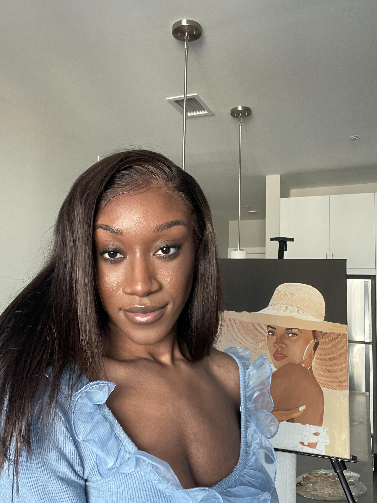

Adaeze Ezekwerre

Summary
I'm a product designer, full-stack developer and visual artist with expereince in desinging for a B2B cloud-computing enterprise. I'm passionate
about diversity in tech, human-centered design and the intersection of psychology and technology.
Education
Master of Science in Information in Human-Computer Interaction &
User Expereince
Graduated December 2022
Philadelphia, PA
Bachelor of Science in Psychology
Graduated May 2021
Towson, MD
Work Experience
UX Designer I
Amazon Web Services - Boston, MA
January 2023 - Present
- Collaborated closely with engineers to identify and mitigate
UX issues within the console and reduced the UX backlog.
- Ensured the implementation of UX designs following the company's
design system and accessibility guidelines, maintaining a consistent and
inclusive user experience.
- Conducted thorough discovery work by analyzing existing services,
identifying gaps, and enhancing the strategy and design of two new features,
leading to a more comprehensive and user-centric solution.
- Actively participated in cross-functional meetings and discussions to
provide valuable UX insights and recommendations with leadership
UX Design Intern
Amazon Web Services - Boston, MA
June 2022 - September 2022
- Spearheaded the end-to-end design of a new feature for Storage Gateway customers,
streamlining the process of creating resources and improving overall usability of the current workflow.
- Conducted an audit of the current experience and a competitive analysis of 5 other
competitors with detailed annotations of potential design solutions and improvements.
- Successfully navigated ambiguity by conducting extensive research and collaborated with PMs,
researchers, and front end and backend engineers to validate the problem space iteratively,
ensuring a user-centered approach.
- Designed high-fidelity wireframes and interactive prototypes based on a speculative strategy,
effectively supporting the development of the new feature being implemented ensuring it aligned
with business and customer goals.
- Conducted usability studies leveraging my background in psychology to understand users'
mental models and identify any usability issues with the new designs, resulting in actionable
insights and design improvements.
- Presented design concepts and findings to stakeholders, providing clear and concise explanations.
Skills & Tools
Design Skills
- Interaction Design
- Prototyping
- Wireframing
- InfomrationArchitecture
- Journey Mapping
- Personas
Design Tools
- Figma
- Adobe Illustrator
- Adobe Photoshop
- Origami
Development
- HTML & CSS
- JavaScript
- ReactJS
Other
Hobbies
Contact